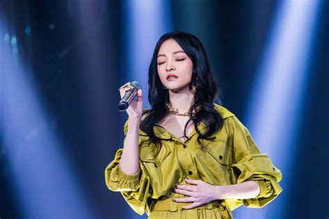

张韶涵
英文名：Angela，出生于1982年1月19日中国台湾省桃园市中坜区，拥有四分之一维吾尔族血统，
华语流行乐女歌手、影视演员，毕业于加拿大温斯顿爵士邱吉尔中等学校。
重要经历
- 2001年，张韶涵回到中国台湾发展事业,主演青春爱情偶像剧《永不言弃》
- 2003年，与许绍洋、霍建华合作主演爱情励志偶像剧《海豚湾恋人》
- 2004年1月6日，推出首张个人音乐专辑《Over The Rainbow》
- 2005年，与彭于晏、董敏莉、张智尧联袂主演青春爱情偶像剧《海豚爱上猫》
- 2006年1月6日，推出第3张个人音乐专辑《潘朵拉》
- 2007年1月12日，推出第4张个人音乐专辑《梦里花》
- 2014年3月7日，推出第8张个人音乐专辑《张韶涵Angela Zhang》
- 2018年1月8日，作为首发阵容参加湖南卫视原创歌手竞赛真人秀节目《歌手2018》
- 2021年1月1日，参加《2021新年音乐会——扬帆远航大湾区》并与平安带来《乘风破浪》
个人生活
- 张韶涵的父亲叫做张志宏，母亲叫做姜柔伊（姜文鹊），外婆叫做彭娇妹，舅舅叫做姜礼乐
- 张韶涵在家排行老大，分别有一个弟弟和妹妹，弟弟叫做张柏御 ，妹妹叫做张韶轩
- 2008年，张韶涵因家族遗传性心脏病，返回加拿大治疗及休息了两个月
- 2008年，张韶涵的父母离婚
- 2013年1月，在网络上推出自创女鞋品牌“Temptation”，这是她首次跨界设计女鞋
- 2013年8月，其投资千万元的实体店面在台湾省台北市东区开张，并上架了300多种鞋款
- 2013年12月，个人音乐品牌“天涵音乐”成立，并亲自担任CEO
主要作品
| 年份 | 音乐专辑 |
| 2019年 | ？ |
| 2016年 | 全面沦陷 |
| 2014年 | 张韶涵Angela Zhang |
| 2013年 | 有形的翅膀 |
| 2009年 | 第5季 |
| 2007年 | ANG 5.0 |
| 2007年 | 百变张韶涵2007 |
| 2007年 | 梦里花 |
| 2006年 | 潘朵拉 |
| 2004年 | 欧若拉 |
| 2004年 | Over The Rainbow |
社会活动照片

人物评价
张韶涵具有甜美的外形，她也因此被称作为“电眼娃娃” 。
她虽然纤瘦，却可以运用她特殊的嗓音条件和精湛的发声方法产生极具爆发力的声音。
她唱起歌来大气辽阔，没有拖沓和小女生的羞涩。在演绎歌曲《Journey》时，其单纯干净的声音和穿透力给人以云中漫步的感觉。
张韶涵收放自如的大气唱腔，给人一种空旷壮阔的感觉。无论是抒情、民谣，还是摇滚，各种风格都展现了张韶涵多变的一面，她具有穿透力的声音中，既有童真，又有着不加修饰的高亢。
.jpeg)
.jpeg)
.jpeg)